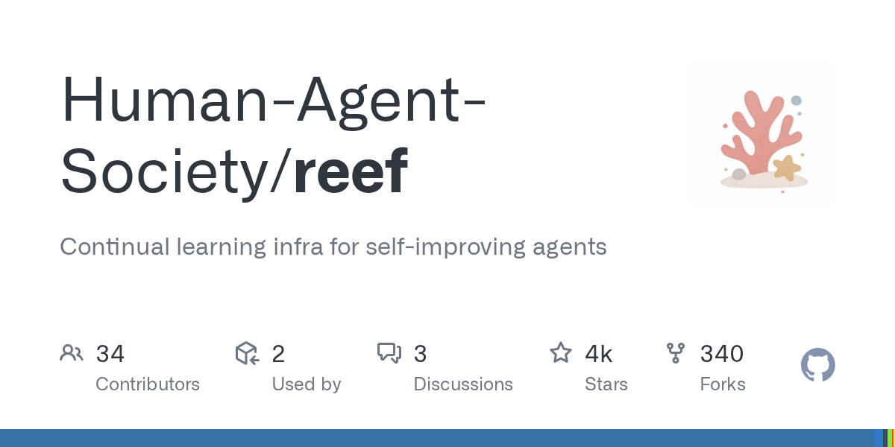

07 GitHub
Human-Agent-Society/reef
피드백 받아 스스로 갱신하는 에이전트 기반
★ 4,162이번 주 +2,182PythonApache-2.0 사내 사용 가능릴리스 v0.1.0 (09.23)최근 활동 09.23테스트 있음예제 없음AGENTS.md 있음

이 저장소는 에이전트가 경험을 쌓으며 스스로 바뀌게 하는 기반 도구다. 응답을 내보내는 단계와, 피드백을 받아 다시 학습하거나 규칙을 고치는 단계를 하나로 묶었다. 만든 쪽은 모델 가중치와 에이전트 하네스라는 두 가지 갱신 면을 지원한다고 설명했다. 업무 자동화 봇을 장기 운영하려는 조직에 맞춘 성격이 강하다.
무엇을 하는 물건인가
이 도구는 에이전트가 낸 답변에 점수와 의견을 붙여 다시 개선하는 기반 소프트웨어다. 상담원이 응대 기록을 보고 답변 지침을 계속 손보는 일을 자동화한 형태에 가깝다. 이 도구가 없으면 추론 서버, 피드백 저장, 학습 작업, 버전 배포를 각각 따로 이어 붙여야 한다. 새 버전은 서비스를 다시 시작하지 않고 다음 요청부터 쓸 수 있다.
스펙과 도입 조건
- 언어는 Python이다.
- 설치 형태는 PyPI 패키지와 소스 설치를 지원한다.
- artifact와 체크포인트 기능에는 Git LFS 시스템 패키지가 필요하다.
- 패키지 관리는 uv 사용을 권장한다.
- 기본 추론 서버로 실행할 수 있다.
- 모델 가중치 학습용 배포는 GPU 요구 사항을 충족해야 한다.
- 하네스 진화 방식은 GPU 대신 모델 엔드포인트만 있으면 된다.
- 외부 모델 엔드포인트를 쓸 때는 제공자 URL, 모델명, 필요 시 API 키가 필요하다.
- 라이선스는 Apache-2.0이다.
- 최신 릴리스는 v0.1.0이다.
이럴 때 쓰면 좋다
- 고객 문의 분류 봇의 응답에 운영자가 점수와 짧은 코멘트를 남기고, 다음 버전에서 그 기준을 반영하고 싶을 때 맞다.
- 개발 지원 봇이 버그 수정 요청을 받을 때 실패 테스트를 먼저 만들도록 규칙을 계속 다듬고 싶을 때 쓸 수 있다.
- 사내 지식 검색 도우미를 부서별 시나리오로 나눠 운영하며, 각 시나리오별 피드백과 버전을 따로 관리할 때 유용하다.
핵심 기능
- OpenAI와 Anthropic 호환 형식의 추론 엔드포인트를 제공한다.
- 응답마다 영수증 역할의 기록 ID를 붙이고, 나중에 점수·텍스트·구조화 피드백을 연결해 보고할 수 있다.
- 충분한 피드백이 쌓이면 학습 단계를 돌리고, 갱신된 가중치를 서비스 중인 런타임에 동기화한다.
대안 대비 차별점
이 저장소는 단순 추론 서버가 아니다. 추론, 피드백 적격성 판단, 학습 작업, 버전 이력, 배포 면을 같은 체계에 넣었다. 만든 쪽은 모델 가중치를 다시 학습하는 방식과, 에이전트 하네스를 다듬는 방식을 둘 다 지원한다고 설명했다. 하네스 방식은 모델 API만으로도 시작할 수 있어 GPU가 없는 환경에서도 실험 범위를 넓힌다.
하네스 갱신은 에이전트 세션 안에서 버전 목록을 보고 설치하는 흐름을 제공한다. 다만 격리 실행은 Linux에서 bwrap과 pasta를 쓸 때, 비루트 사용자 조건에서 지원된다고 적혀 있다. 다른 환경에서는 신뢰하는 장비에서만 샌드박스 없이 돌리라고 안내한다.
사내 도입 체크
- 외부 API 호출은 구성에 따라 달라진다. 하네스 방식은 외부 모델 엔드포인트를 붙일 수 있고, 인증이 필요하면 API 키를 써야 한다.
- 피드백과 버전 이력이 쌓이므로 데이터 반출 범위와 보관 위치를 먼저 정해야 한다. 기본 상태 저장 경로는 로컬 .reef/ 아래다.
- 유지보수 주체는 개인이 아니라 Human-Agent-Society 조직으로 보인다.
- 상용 대체재 유무는 확인 필요다. 다만 추론, 피드백, 학습, 버전 공개를 한 체계로 묶은 공개 도구는 흔하지 않다.
주요 용어
원문 정보
제목: Human-Agent-Society/reef
최근 활동: 2026.09.23